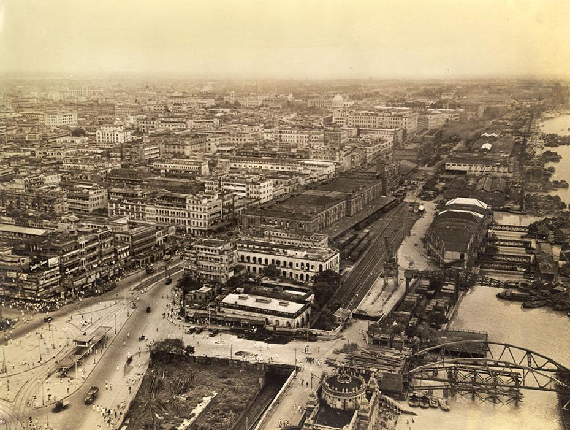

.gif)
CITY ATTRACTION
A Brief History About Kolkata
The discovery and archaeological study of Chandraketugarh, 35 kilometres (22 mi) north of Kolkata,
provide evidence that the region in which the city stands has been inhabited for over two millennia.
Kolkata's recorded history began in 1690 with the arrival of the English East India Company, which was consolidating
its trade business in Bengal. Job Charnock, an administrator who worked for the company, was formerly credited as the
founder of the city; In response to a public petition, the Calcutta High Court ruled in 2003 that the city
does not have a founder. The area occupied by the present-day city encompassed three villages: Kalikata, Gobindapur,
and Sutanuti. Kalikata was a fishing village; Sutanuti was a riverside weavers' village. They were part of an estate
belonging to the Mughal emperor; the jagirdari (a land grant bestowed by a king on his noblemen) taxation rights to
the villages were held by the Sabarna Roy Choudhury family of landowners, or zamindars. These rights were transferred
to the East India Company in 1698. |
Some Facts About CityHistory of KolkataImportance as a Tourist Destination Role as a Commercial Hub of Eastern India Community Top 5 Visiting Destinations |
Photo Gallery 
|